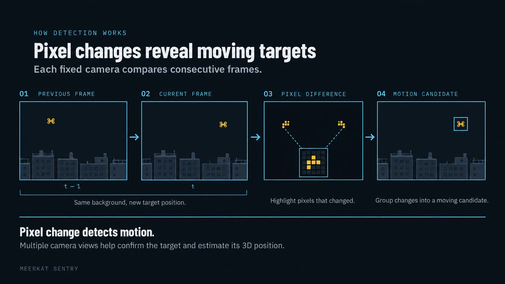
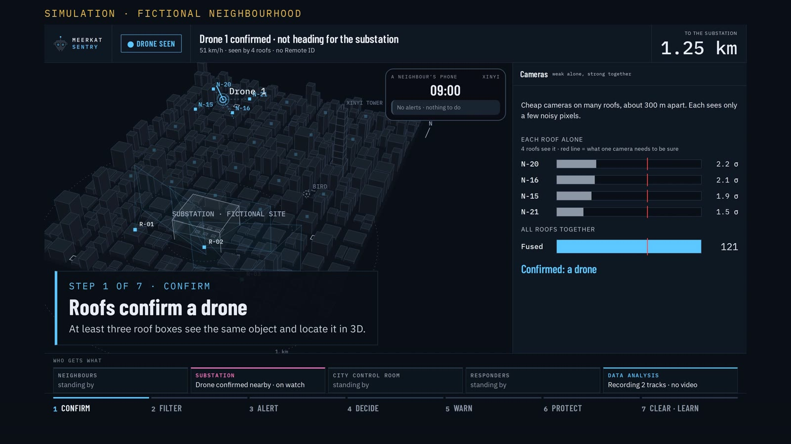
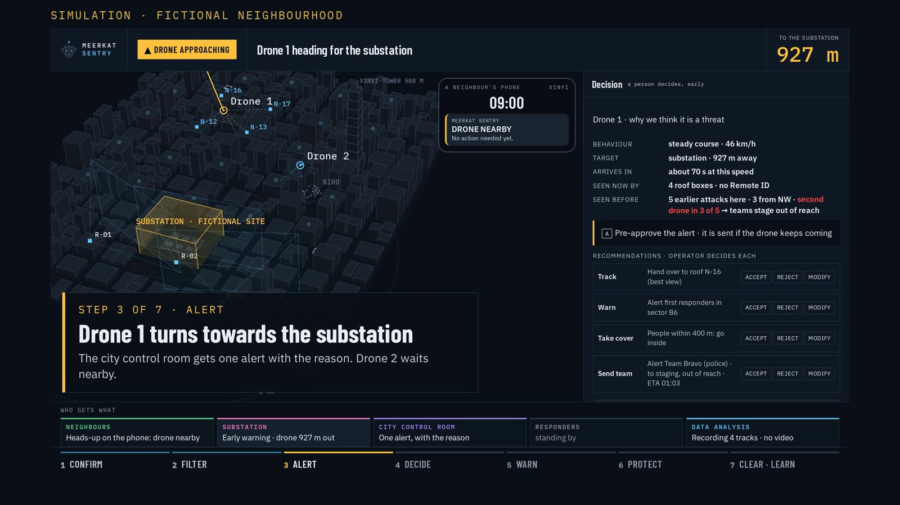
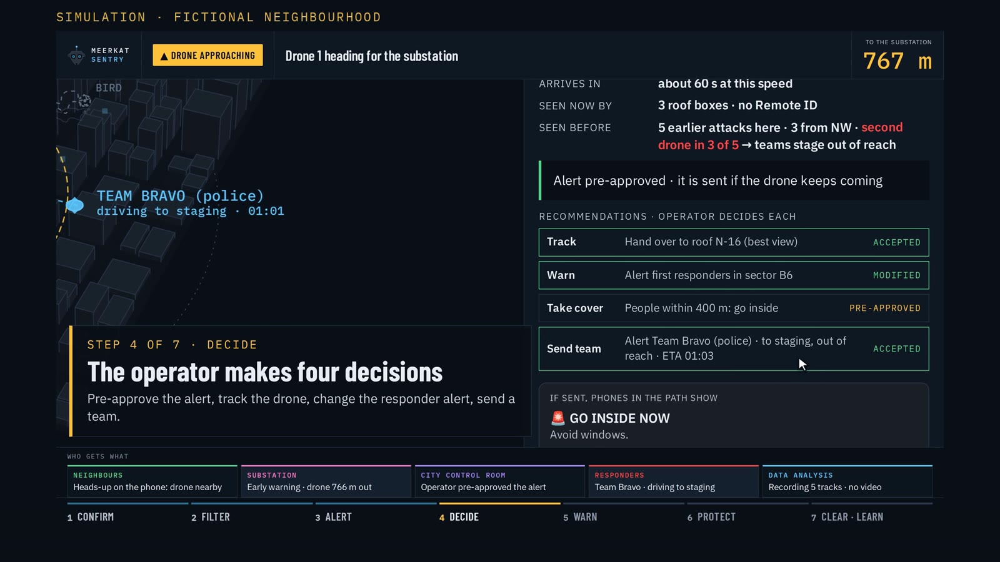
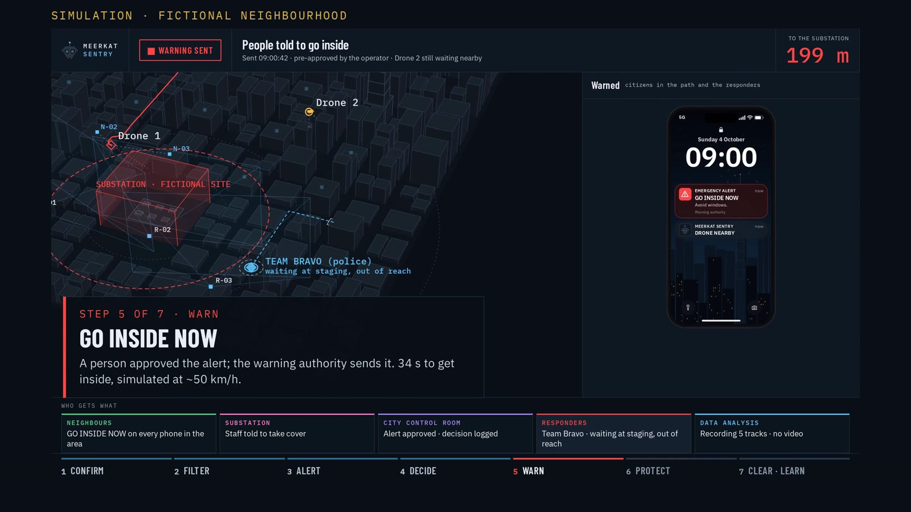
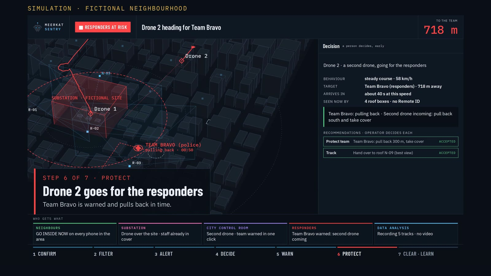
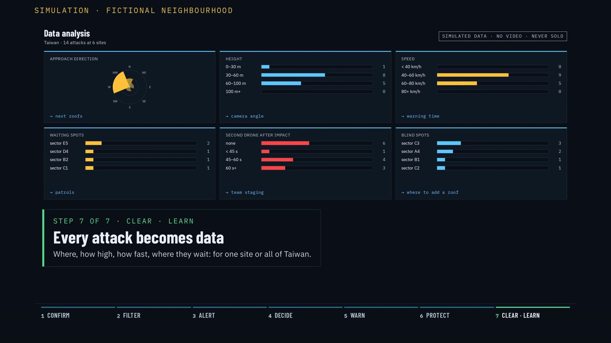

Honorable Mention · Taiwan Defense Tech Hackathon · Taipei, 2–4 Oct 2026 Team 08 · Challenge 04
Camera nodes and fusion: Edoardo Dominikus, Sean Ching · Dashboard, simulation and videos: Jan Barkemeyer · Deck and strategy: Jan Barkemeyer, Robin Fischer · Pitch: Robin Fischer
Small drones fly below the roofs, where radar cannot see. Meerkat Sentry puts cheap camera boxes on many roofs. When at least three roofs see the same object, it is a confirmed drone. A person in the city control room checks the alert, and the approved alert goes to the authority that warns the public. Residents host the boxes, the city runs the network. We complement radar in the city.
Video 2 · the vision · 85 s · simulation of the finished system in a fictional neighbourhood
Small drones already disrupt cities: Taoyuan airport stopped its runway in 2023 and 2026, European airports closed for hours in 2025, drones flew over Kinmen outposts in 2022. The lesson from Ukraine: cheap drones hit power stations first, then the crews who come to repair them.
Sources: Focus Taiwan (2023), Taipei Times (2026), Kyiv Independent and Wikipedia (2025), Jamestown Foundation (2022); full list in the deck.
How it works
Weak alone, strong together
1 · ROOF BOX
See
2–6 cheap cameras per roof, facing the sky. Video stays in the box; only detections leave it.
2 · NETWORK
Confirm
2 roofs give a 3D position, 3 confirm a drone. Birds, balls and drones that broadcast Remote ID are filtered, unless they head for a protected site.
3 · CITY CONTROL ROOM
Decide
One alert with the reason: speed, heading, time to target. A person accepts, rejects or changes each recommendation. Every click is logged.
4 · WARNING
Warn
The approved alert goes to the authority that warns the public, like an earthquake alert. Our demo uses a Telegram group.

Real · built at the hackathon
Three ordinary cameras, one drone
3 Raspberry Pi camera nodes and a controller that fuses their views into one 3D track
Phone alert to real phones through a Telegram demo group
Outdoor test, 4 Oct: one station and an image check; the operator confirms, the phone gets the alert. Outdoor fusion of 3 roofs is not yet tested.
Real footage from our lab test, 3 Oct 2026: all three cameras mark the same drone.
Video 1 · real outdoor test on campus, 4 Oct 2026: a camera sees the drone against the sky, an image check scores it, the operator confirms, and the phone gets the alert through our Telegram demo channel.
Simulation · fictional neighbourhood
The same software, for a city neighbourhood
24 roof boxes, a drone heading for a substation, a second drone aimed at the responders who come to help. Approving the warning early gives people 34 s instead of 26 s to get inside (simulated, drone at ~50 km/h).

1 · Roofs confirm a drone

2 · It turns towards the substation: one alert, with the reason

3 · The operator makes four decisions

4 · Phones in its path: GO INSIDE NOW

5 · Drone 2 goes for the responders; the team pulls back in time

6 · All clear, then every attack becomes data (simulated)
Who does what · target model
One network, two uses
RESIDENTS
Host a roof box
Roof and power, free; they get warnings for their block and can add their own box at cost.
CITY CONTROL ROOM
Runs the network
The city or civil defence pays for the base network and the service. Target buyer, not yet validated.
WARNING AUTHORITY
Warns the public
NCDR or Ministry of National Defense. Gets a confirmed track with the reason.
MILITARY & RADAR
Get the picture
Tracks below the radar, as a complement.
Everyday: find illegal drone flights. Crisis: warn people in the drone’s path.
Money: boxes at cost; a service fee per box and month. Our cost ≈ $8+ per box and month ASSUMPTION; the price would be set in a pilot.
Size: ~78,000 roof boxes for Taiwan’s urban areas at one box per 250 m ASSUMPTION; drone detection market ≈ $2.8 bn by 2030 (MarketsandMarkets).
Box: ≈ $345 in off-the-shelf parts today, no core part made in the PRC; ≈ $100 target at volume ASSUMPTION.
Rules: video never leaves the box, data is never sold, a person always approves a public warning.
Honest status
What is not proven yet
Outdoor range, false-alarm rate, coverage between high-rises: not measured yet. That is the first job of a pilot on real roofs.
Outdoor fusion: outdoors, the alert came from one station plus an image check. Indoors, three cameras fuse into one 3D track.
Night and fog: cheap cameras do not see the sky at night. Future: thermal cameras and microphones in the same box.
Who pays: the city as buyer is our assumption; a pilot would test it.
Result · Honorable Mention
Team 08
Honorable Mention at the Taiwan Defense Tech Hackathon 2026. The jury rated originality and scalability highest.